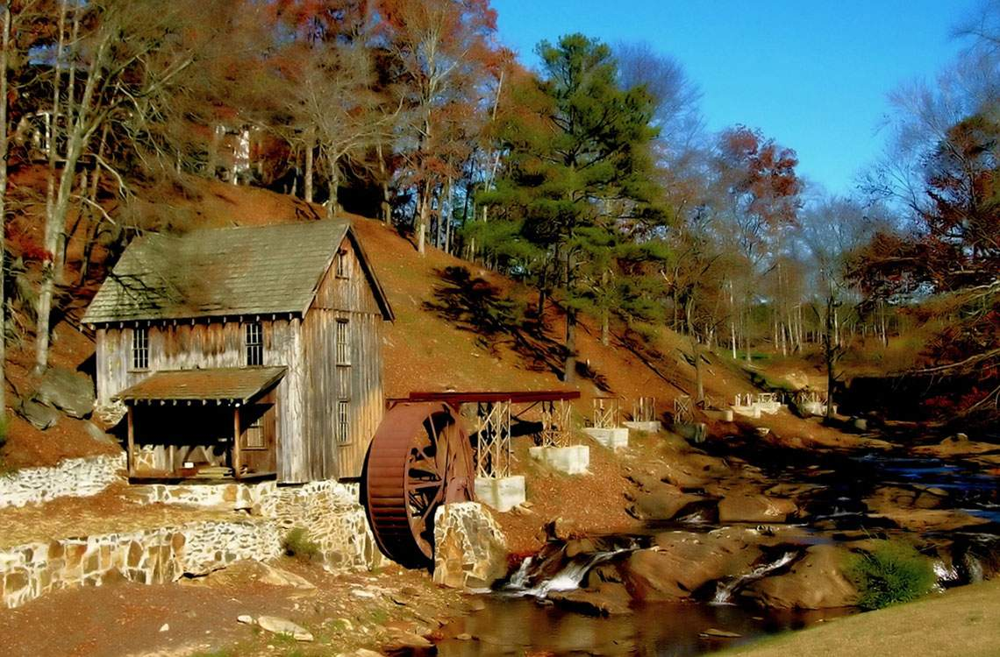
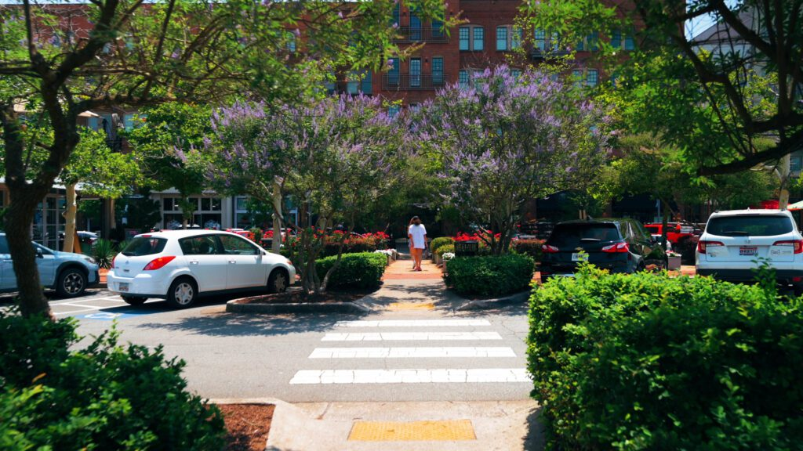

Solutions-focused leadership for the challenges District 4 faces today.
Woodstock, and all the communities across District 4 are growing fast. Steven believes growth should be managed responsibly, so our roads aren't gridlocked, our schools aren't overcrowded, and our infrastructure keeps pace with development.
That means smarter planning, sustainable investment, and making sure our community's character is preserved as we welcome new neighbors. Growth should lift everyone up, not leave longtime residents behind.
Corporations should not be allowed to own residential properties. When Wall Street firms and out-of-state corporations buy up single-family homes to turn them into rentals, they drive up prices and push families out of the neighborhoods they've called home for years.
Steven will fight to ensure that homes in our community are for families and not corporate balance sheets. Homeownership is the foundation of strong communities, and we need to protect it.
Fiscal responsibility is paramount to ensuring Cherokee County's long-term health and prosperity. I will advocate for responsible budgets that prioritize smart spending, eliminate wasteful expenditures, and ensure our tax dollars are used efficiently. Crucially, this includes safeguarding and preserving essential funding for our beloved libraries, social services, and parks. These vital community assets are not luxuries; they are cornerstones of education, recreation, and quality of life that enrich every resident and foster a stronger, healthier community.
Steven will not allow our land to be used for data centers. Massive data center developments consume enormous amounts of energy and water, generate noise and traffic, and contribute little to local employment or community life.
Our land should serve the people who live here, our families, parks, local businesses, and schools. Steven will stand firm against proposals that prioritize corporate profits over our community's quality of life.
A safe community is the foundation of a thriving community. My commitment is to enhance public safety across Cherokee County by ensuring our first responders – our police, firefighters, and EMS personnel – have the resources, training, and support they need to protect our families and property. This means advocating for competitive compensation, modern equipment, and strategic planning to address growth, so that every resident can feel secure in their neighborhoods and throughout our county.
Steven is committed to transparency in government. Residents have a right to know how decisions are made, how funds are spent, and how policies will impact our community. I will advocate for open meetings, expaned communication channels, and accessible information so that everyone can stay informed and engaged in the democratic process.
Growth means more cars on our roads, more demand on water and sewer systems, and more pressure on emergency services. Steven will push to ensure infrastructure investment keeps pace with development.
Residents shouldn't have to sit in traffic for an hour or wonder when the next water main will break. We need proactive investment—not reactive band-aids.
Steven understands the complex systems that drive energy costs. He'll advocate for policies that protect consumers, promote fair rates, and give families real options.
Nobody should have to choose between keeping the lights on and putting food on the table. Steven will fight for energy solutions that are affordable, reliable, and sustainable for our community.
The neighborhoods, small businesses, historic downtowns, and natural beauty that make Cherokee County special didn't happen by accident. Steven is committed to preserving the character of our community as we grow; protecting green spaces, supporting local businesses, and ensuring that development serves the people who live here. When we protect what makes our community great, we build a stronger future for everyone.

